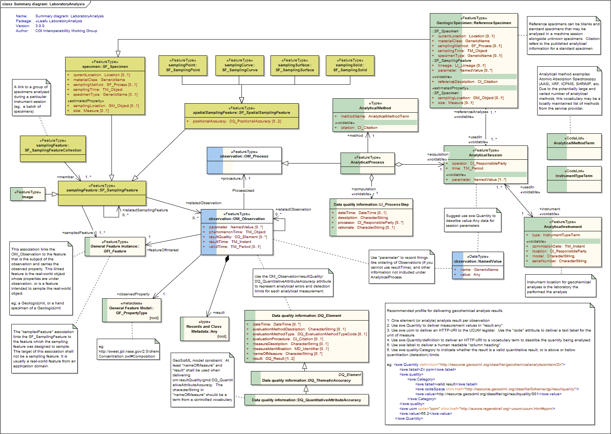
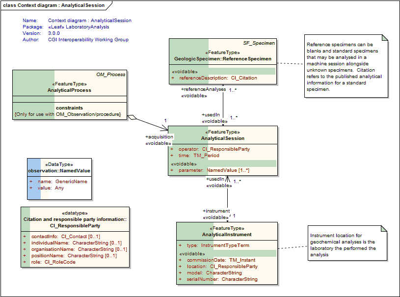
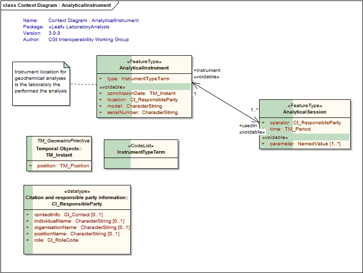
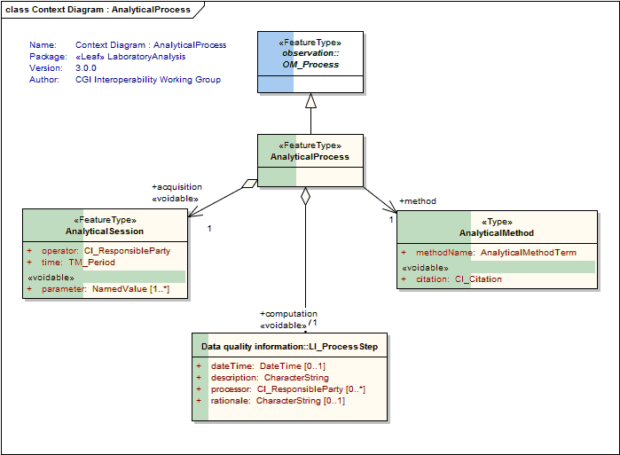
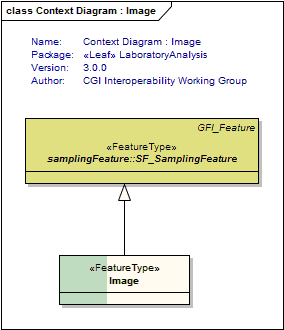

Package GeoSciML/LaboratoryAnalysis-Specimen/LaboratoryAnalysis
The LaboratoryAnalysis leaf package describes processes, instruments and result quality associated with quantitative analysis of samples.
Class Summary |
|
| <<FeatureType>> Classes | |
AnalyticalInstrument
<<FeatureType>>
|
Type of instrument used to perform an analytical observation |
AnalyticalProcess
<<FeatureType>>
|
Concrete implementation of OM_Process. Links to an analytical session (data acquisition) or a computational process which produce analytical results. |
AnalyticalSession
<<FeatureType>>
|
This class describes the time and operator of a particular laboratory analytical session. AnalyticalSession also has associated links to the type of instrument and analytical method used, processing steps applied to data collected during a session, and instrument parameters unique to that session. |
Image
<<FeatureType>>
|
Use gml:description for xlink:href URL to a photographic image. SF_Process = camera. For example, photographs of ion microprobe grain mounts. |
| <<Type>> Classes | |
AnalyticalMethod
<<Type>>
|
Name, and published citation (nillable), of the analytical method used in an analytical session |
| <<CodeList>> Classes | |
AnalyticalMethodTerm
<<CodeList>>
|
Refers to a vocabulary of terms describing the analytical method used in an analytical session (eg; XRF mass spectrometry, ICPMS, SHRIMP geochronology) |
InstrumentTypeTerm
<<CodeList>>
|
Refers to a vocabulary of Instrument types (eg; XRF, ICPMS, SHRIMP, etc) |
Tagged Values |
||
| Tag | Value | Notes |
| xsdDocument | laboratoryAnalysis.xsd | Description: Name of an XML Schema document to create representing the content of this package |
| xsdEncodingRule | iso19136_2007 | Values: iso19136_2007 | iso19139_2007 | iso19136_2007_INSPIRE_Extensions Default: iso19136_2007 Description: XML Schema encoding rule to apply |
UML Diagram: Summary diagram: LaboratoryAnalysis

UML Diagram: Context diagram : AnalyticalSession

UML Diagram: Context Diagram : AnalyticalInstrument

UML Diagram: Context Diagram : AnalyticalProcess

UML Diagram: Context Diagram : Image
